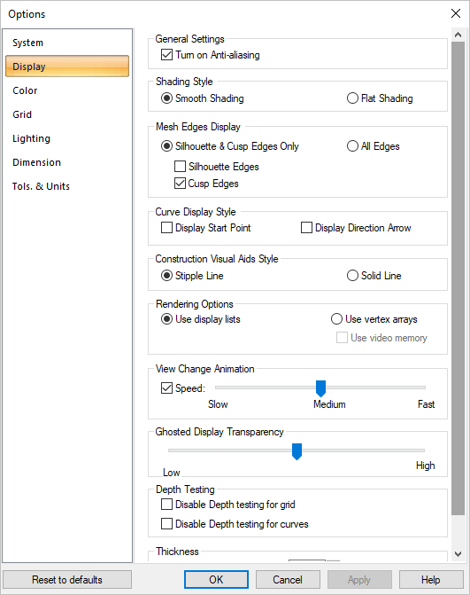
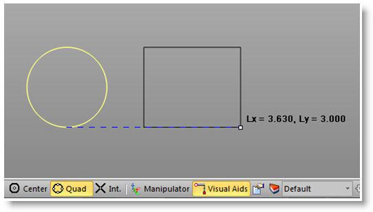
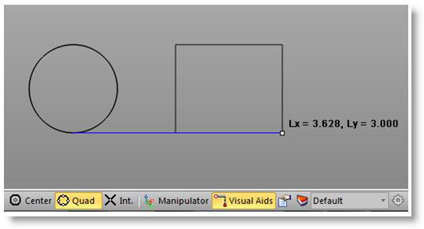

Controls how geometry is displayed. Select from the following:
 Dialog Box: Options > Display |
Turn on Anti-aliasing A method of smoothing the jagged edges along the lines and curves of text or graphics. Aliasing is caused by limited display resolution. Selecting this option turns on Anti-aliasing. |
This controls how smooth surfaces are shaded.
The pictures demonstrate the difference between smooth and flat shading. The left picture smoothly changes the amount of shading as the surface curves. The right picture just displays the shading for a flat facet on the surface. Since all surfaces (including smooth ones) are internally represented as flat facets, flat shading can affect any surface. The default is smooth shading. |
This changes how smooth surfaces are displayed. Since all surfaces are internally represented as flat facets, these facets join up along edges. On smooth surfaces, these edges are not sharp and are not normally displayed. An example of a sharp edge is the edge of a cube.
The pictures demonstrate the difference between silhouette & cusp edges only and all edge display. The left picture displays only sharp edges (there are none on a sphere); meanwhile, the right picture displays all the edges. The default is Silhouette & Cusp Edges Only. When selected, this allows you to select Silhouette Edges, Cusp Edges or All Edges to display. |
This provides an option to turn on or off display of curve start point and direction arrow.
Selecting Start Point and Curve Direction arrow display under options displays both start point and curve direction arrow. |
This provides an option to choose the display style between Stipple line and Solid line for visual aids when the Visual Aids is set to active under the status bar.  Stipple line display  Solid line display |
This can be set to Use Display Lists or Vertex Arrays. The Vertex Arrays option also provides the option to Use Video Memory from the video card that is installed on the computer. The speed and performance varies depending on the operating system type and video card installed. |
Whenever the view orientation is changed within the active viewport, VisualCAD can make that orientation change instantly or through smooth animation. If animation is used, the speed of the animation can be set. Under the View Change Animation function, check the box next to Speed to activate the animation. The animation speed can be controlled using the slider bar. |
Whenever the view mode is set to Ghosted Display, you can use this slider to control the transparency level of the hidden (ghosted) geometry. |
These options allow you to fully display certain objects regardless of the view mode. For example, checking the box to Disable Depth Testing for curves, will display all curves even if the view is set to shaded model. You can also Disable Depth testing for grid. If enabled, the grid lines will always display. |
Use this parameter to set the display line thickness for all wireframe geometry. Set this to 1 for the default line thickness. Higher for thicker lines. |